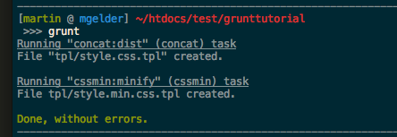

Grunt
Einführung und Workflow
Was ist Grunt?
- Task Runner
- Zusammenfassen
- Automatisieren
- Vereinfachen
Woraus besteht Grunt?
Javascript!
Javascript!?
Node.js
JS Laufzeitumgebung
Basiert auf Chromes V8 Javascript Engine
Download via nodejs.org
NPM

Node.js Paketverwaltung
Tool Setup
1. Node.js
Installer herunterladen und ausführen
NPM ist Bestandteil von Node.js
2. Grunt
NPM übernimmt ab hier
npm install -g grunt-cliGrunt Aufbau
- Alles Plugins
- Plugins liefern Aufgaben
- Projekt konfiguriert Aufgaben
- Grunt Plugin Repository
Projekt Setup
1. Paketdatei
package.json Datei im Projektordner erstellen
{
'name' : 'projekt-id',
'version' : '0.0.1'
}... oder ...
npm init2. Grunt
npm install grunt --save-devInstalliert Pakete im Ordner node_modules
package.json wird automatisch geupdatet
3. Das Gruntfile
Konfiguration der Grunt Aufgaben im Projekt
Gruntfile.js Datei im Projektordner erstellen
module.exports = function(grunt) {
var gruntconfig = {};
gruntconfig['pkg'] = grunt.file.readJSON('package.json');
/* --- Aufgaben Konfiguration --- */
grunt.initConfig(gruntconfig);
/* --- Plugins laden --- */
// Standard Aufgabe
grunt.registerTask('default', []);
};Grunt Plugins
1. Concat
npm install grunt-contrib-concat --save-dev// ##### Gruntfile.js #####
/* --- Aufgaben Konfiguration --- */
gruntconfig['concat'] = {
'dist': {
'src' : ['tpl/raw/style_a.css.tpl', 'tpl/raw/style_b.css.tpl'],
'dest': 'tpl/style.css.tpl'
}
};
/* --- Plugins laden --- */
grunt.loadNpmTasks('grunt-contrib-concat');
// Standard Aufgabe
grunt.registerTask('default', ['concat']);2. CSSMin
npm install grunt-contrib-cssmin --save-dev// ##### Gruntfile.js #####
/* --- Aufgaben Konfiguration --- */
gruntconfig['cssmin'] = {
'minify': {
'expand': true,
'cwd' : 'tpl/',
'src' : ['*.css.tpl', '!*.min.css.tpl'],
'dest' : 'tpl/',
'ext' : '.min.css.tpl'
}
};
/* --- Plugins laden --- */
grunt.loadNpmTasks('grunt-contrib-cssmin');
// Standard Aufgabe
grunt.registerTask('default', ['concat', 'cssmin']);3. Watch
npm install grunt-contrib-watch --save-dev// ##### Gruntfile.js #####
/* --- Aufgaben Konfiguration --- */
gruntconfig['watch'] = {
'files': ['tpl/*.css.tpl', '!tpl/*.min.css.tpl'],
'tasks': ['default']
};
/* --- Plugins laden --- */
grunt.loadNpmTasks('grunt-contrib-watch');Gruntfile.js
module.exports = function(grunt) {
var gruntconfig = {};
gruntconfig['pkg'] = grunt.file.readJSON('package.json');
gruntconfig['concat'] = {
'dist': {
'src' : ['tpl/raw/style_a.css.tpl', 'tpl/raw/style_b.css.tpl'],
'dest': 'tpl/style.css.tpl'
}
};
gruntconfig['cssmin'] = {
'minify': {
'expand': true,
'cwd' : 'tpl/',
'src' : ['*.css.tpl', '!*.min.css.tpl'],
'dest' : 'tpl/',
'ext' : '.min.css.tpl'
}
};
gruntconfig['watch'] = {
'files': ['tpl/*.css.tpl', '!tpl/*.min.css.tpl'],
'tasks': ['default']
};
grunt.initConfig(gruntconfig);
/* --- Plugins laden --- */
grunt.loadNpmTasks('grunt-contrib-concat');
grunt.loadNpmTasks('grunt-contrib-cssmin');
grunt.loadNpmTasks('grunt-contrib-watch');
// Standard Aufgabe
grunt.registerTask('default', ['concat', 'cssmin']);
};Grunt Starten
Standard Aufgabe
// Standard Aufgabe
grunt.registerTask('default', ['concat', 'cssmin']);gruntAufgaben direkt starten
grunt concat
grunt cssmin
grunt watch // Spezialfall: Blockiert den ProzessBeispiel
Projektstruktur
- Gruntfile.js
- package.json
- tpl
- raw
- style_a.css.tpl
- style_b.css.tpl
- raw
Dateiinhalte
/* style_a.css.tpl */
h1 {
font-size: 40px;
}
/* style_b.css.tpl */
div {
padding: 10px;
}
Grunt Start

Neue Projektstruktur
- Gruntfile.js
- package.json
- tpl
- style.css.tpl
- style.min.css.tpl
- raw
- style_a.css.tpl
- style_b.css.tpl
Neue Dateiinhalte
/* style.css.tpl */
h1 {
font-size: 40px;
}
div {
padding: 10px;
}
/* style.min.css.tpl */
h1{font-size:40px}div{padding:10px}LESS

CSS Präprozessor
Installation
npm install grunt-contrib-less --save-dev// ##### Gruntfile.js #####
/* --- Aufgaben Konfiguration --- */
gruntconfig['less'] = {
'dev': {
'files': {
'css/main.css': 'css/less/main.less',
'css/page.css': 'css/less/page.less'
}
}
};
/* --- Plugins laden --- */
grunt.loadNpmTasks('grunt-contrib-less');SASS

CSS Präprozessor
Installation
npm install grunt-contrib-sass --save-dev// ##### Gruntfile.js #####
/* --- Aufgaben Konfiguration --- */
gruntconfig['sass'] = {
'dev': {
'files': {
'css/main.css': 'css/sass/main.sass',
'css/page.css': ['css/sass/inc.sass', 'css/sass/page.sass']
}
}
};
/* --- Plugins laden --- */
grunt.loadNpmTasks('grunt-contrib-sass');Fin
Dankeschön! :)